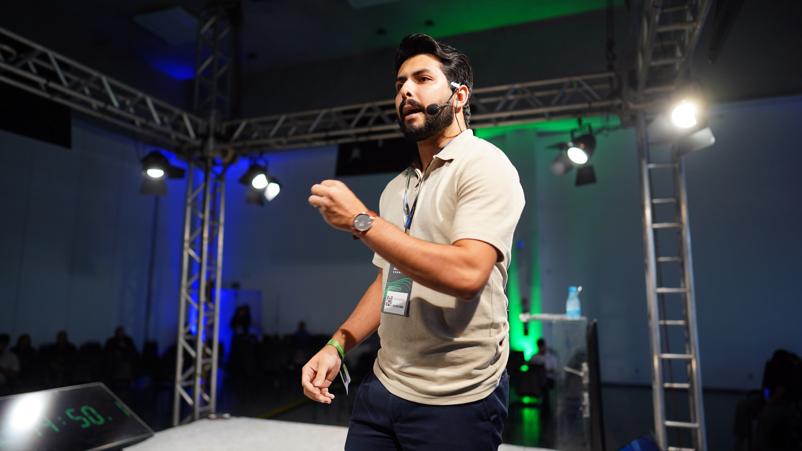
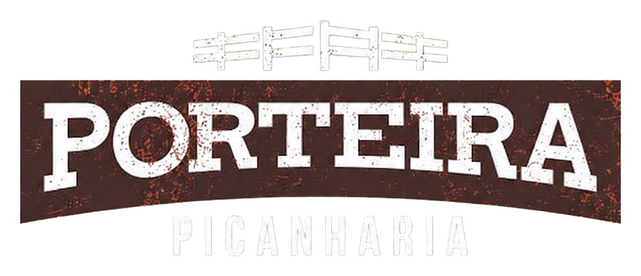

Arquitetura de aquisição
Oferta, público, jornada, canais e metas conectados numa operação que o time consegue executar e o negócio consegue medir.
Igor Andrade · Destiny Ads

Uma operação que conecta estratégia, mídia paga, atendimento, mensuração e automação para gerar demanda, corrigir gargalos e mostrar com clareza onde vale a pena investir cada centavo.
O que eu construo
01 / 04Oferta, público, jornada, canais e metas conectados numa operação que o time consegue executar e o negócio consegue medir.
Meta, Google e TikTok trabalhando em papéis diferentes — distribuição, captura de demanda, conversão e recorrência.
Mensuração, automações e agentes ampliam a leitura do cenário, preservando a decisão estratégica sob responsabilidade humana.
Cases e operações B2B
02 / 04Sintonia de Mulher · 2026
116%da meta de mil pessoas alcançada em apenas 56 dias
Maior bomboniere de Manaus
~3 mildonos de mercadinhos, padarias e bares em grupos próprios
Base B2B recorrente · de 460 para quase 3 mil membros
DSX · 2025 + 2026
+4.450público acumulado em duas edições

Um dos maiores deliveries da Região Norte
1 → 3expansão de uma para três unidades acompanhada pela assessoria
Operação contínua de aquisição durante o crescimento

Amazon IA Summit · 2025
+1.200participantes em um evento nichado de IA
Privê do Atalaia · Hotelaria no Pará
44xmais conversas mensais após reorganizar hotel e restaurante
53 → 2.329 por mês, em média
Grupo Martins · Automotivo
+10.800leads gerados em uma operação recorrente
O sistema por trás
03 / 04Plataformas mudam. O método continua: observar o negócio, construir a arquitetura e transformar aprendizado em processo.
Diagnóstico
Oferta, histórico, capacidade comercial, dados disponíveis e gargalo real entram na mesa antes de qualquer campanha.
Arquitetura
Mensagem, mídia, página, WhatsApp e atendimento deixam de competir e passam a trabalhar na mesma direção.
Aprendizado
Eu testo, mensuro, documento e uso a Eva para ampliar a análise. A IA ganha escala; a estratégia mantém o critério.
EVA · Sistema de inteligência da DestinySobre
Sou Igor Andrade, fundador da Destiny Ads e arquiteto de operações de aquisição.
Entrei no mercado como gestor de tráfego e evoluí para desenhar sistemas que unem mídia, mensuração, atendimento e automação. Já trabalhei com eventos, varejo, hotelaria, automotivo, alimentação e serviços locais.
Antes de começar
04 / 04Para empresas com oferta validada, operação comercial ativa e disposição para medir o caminho entre mídia, atendimento e receita. O setor muda; a necessidade de clareza não.
Diagnostica gargalos, desenha a arquitetura de aquisição e conecta estratégia, mídia paga, mensuração, WhatsApp, automação e IA numa operação que possa ser acompanhada.
Não. Campanhas são uma parte do sistema. Oferta, mensagem, página, dados e capacidade comercial também entram na decisão — porque anúncio nenhum corrige sozinho um processo quebrado.
Com uma conversa sobre cenário, objetivo, histórico e gargalo percebido. Se houver aderência, o próximo passo é um diagnóstico mais profundo e uma proposta de trabalho compatível com o contexto.